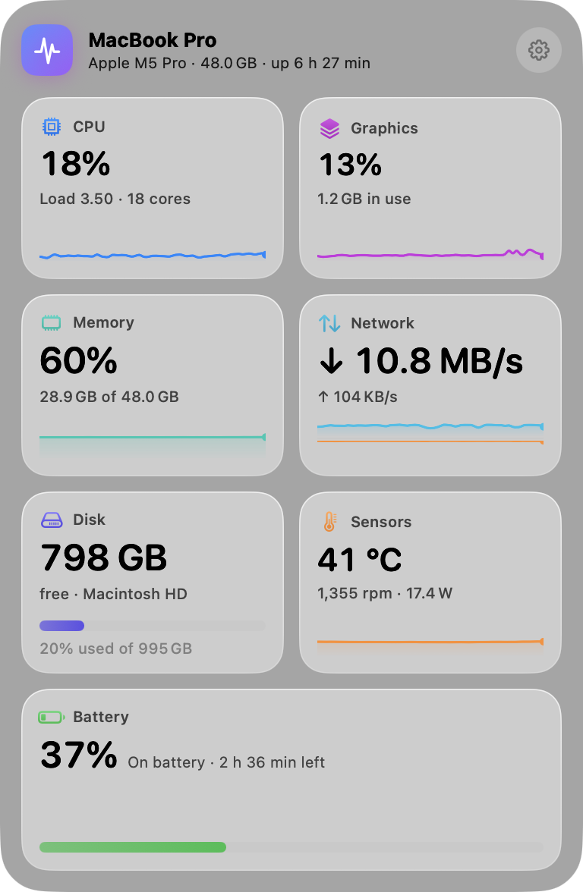
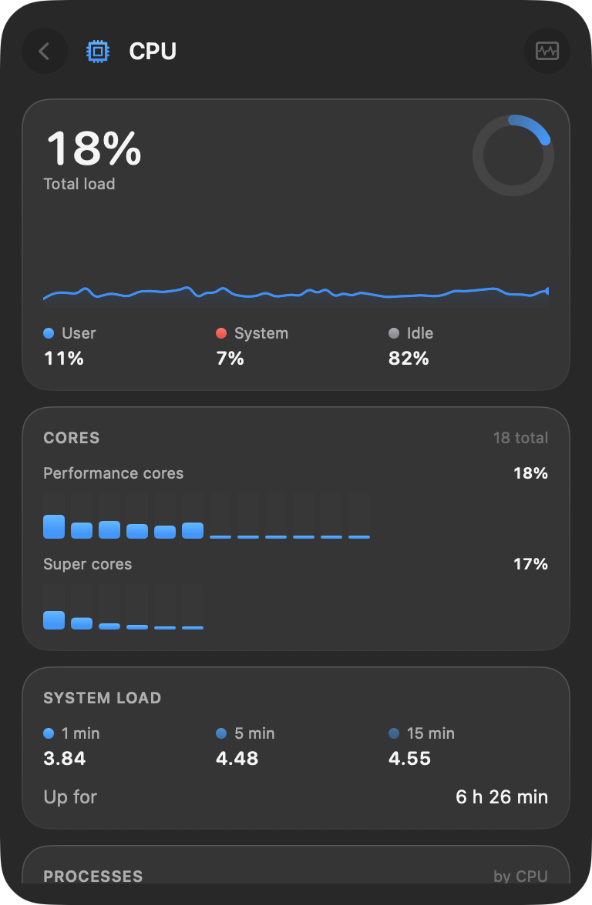
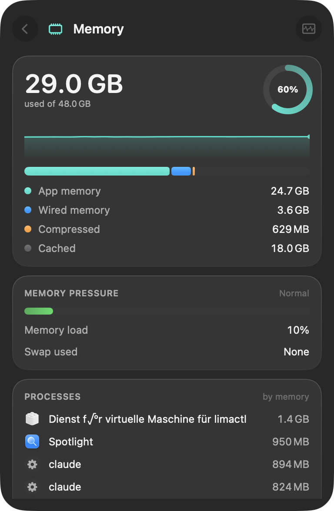
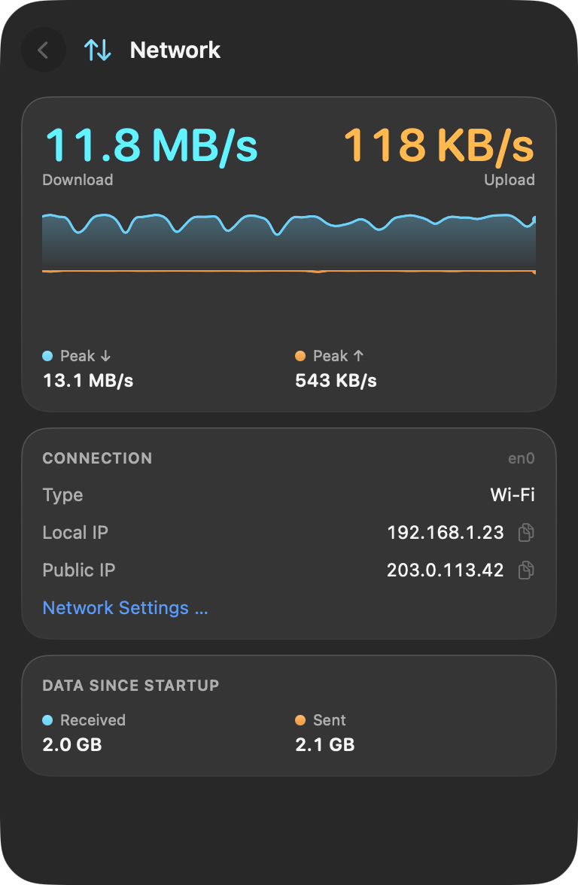
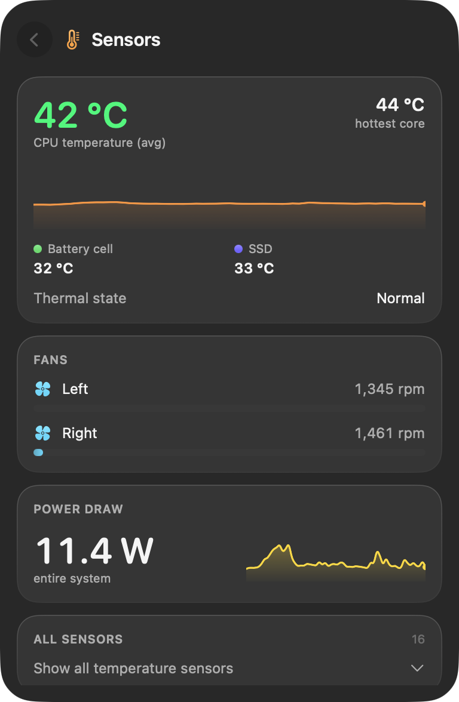
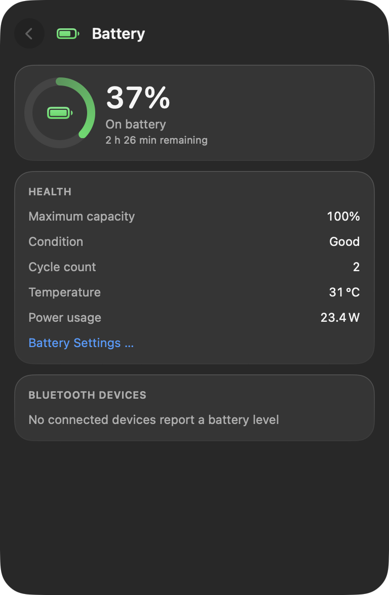
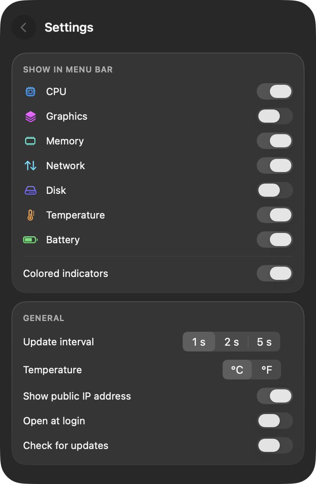

Your Mac, at a glance.
Puls sits in your menu bar and shows what your Mac is doing right now: processor, graphics, memory, network, disk, thermals and battery. One click opens the details.

Every part of your Mac, one click deeper.
Each tile opens a detail view with history, the numbers behind it and what they mean.






Made to stay out of the way.
Light on your Mac
Puls measures every two seconds and uses well under one percent of a single core while doing it.
Private by design
No account, no analytics, no ads. Your readings never leave your Mac.
At home on Tahoe
Built with SwiftUI and Liquid Glass, in English and German, with light and dark mode.
Two ways to get Puls.
Both are free. The App Store version runs in Apple's sandbox, which blocks access to sensors and other apps, so it shows a little less.
| GitHub | Mac App Store | |
|---|---|---|
| Processor, graphics, memory, network, disk, battery | Included | Included |
| Thermal state, power draw, battery temperature | Included | Included |
| CPU and chip temperatures, fan speeds | Included | Not available |
| Busiest processes | Included | Not available |
| AirPods battery levels | Included | Not available |
| Updates | Notice in the panel | Automatic |
| Signed by | Developer ID, notarized by Apple | Mac App Store |
Please install only one of them. Both are called Puls.
Questions
Where is Puls after I open it?
Puls lives in the menu bar and has no Dock icon. Look for its values in the top right of your screen; click them to open the panel, right-click for a small menu.
How do I quit Puls?
Right-click the Puls item and choose Quit Puls, or open the settings in the panel and click Quit.
Does Puls start with my Mac?
The GitHub version does so from the first launch, the App Store version asks first. You can change it any time in the settings under Open at login.
Which languages does Puls speak?
English and German. Puls follows the language in System Settings, General, Language and Region.
Is Puls really free?
Yes. Puls is open source under the MIT license, without ads, subscriptions or in-app purchases.